Meet Your Committee and Other Club Officers
The Portsmouth Joggers committee is here to support and serve our members. They meet regularly to discuss club matters - e.g. club finances, kit, upcoming events/races, charity donations or any other topical item.
Committee
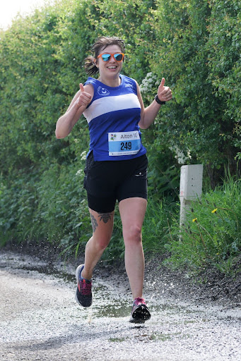
Kate Lewis - Chair
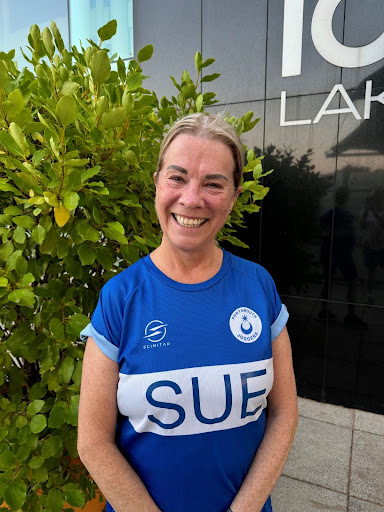
Sue Clarke - VC and Chief Welfare Officer
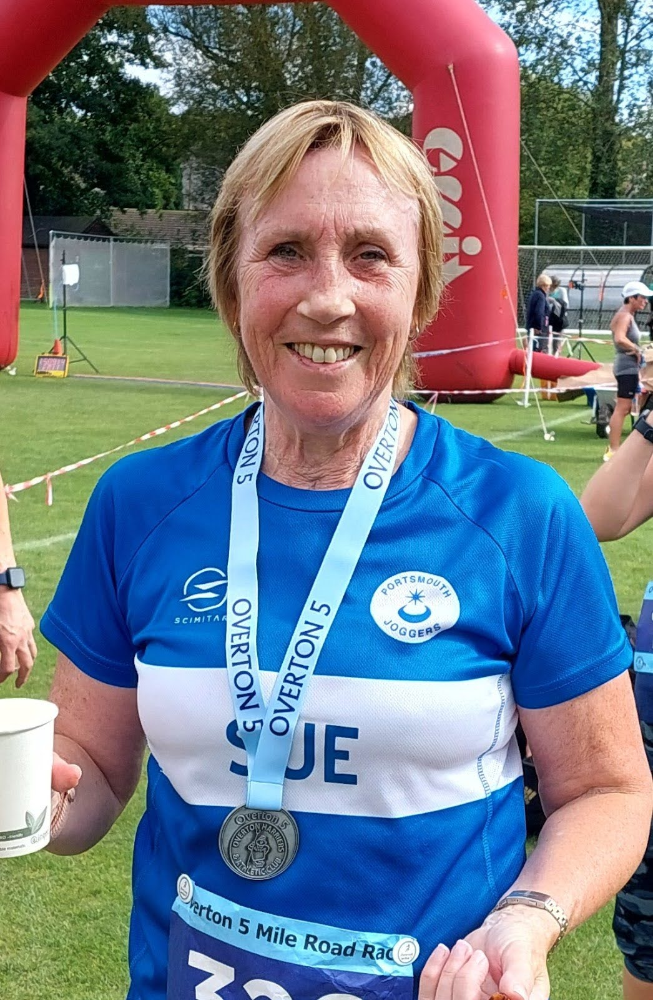
Sue Hyson - Secretary
Gary Lamb - Treasurer
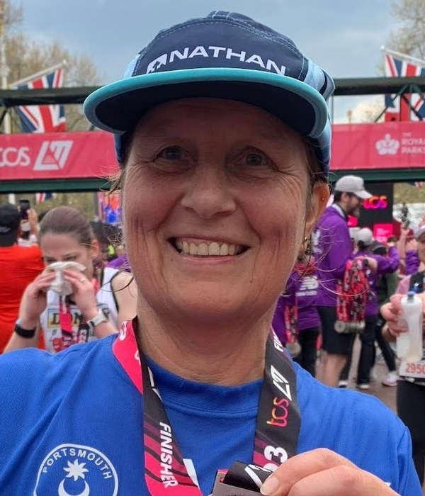
Ally Smith
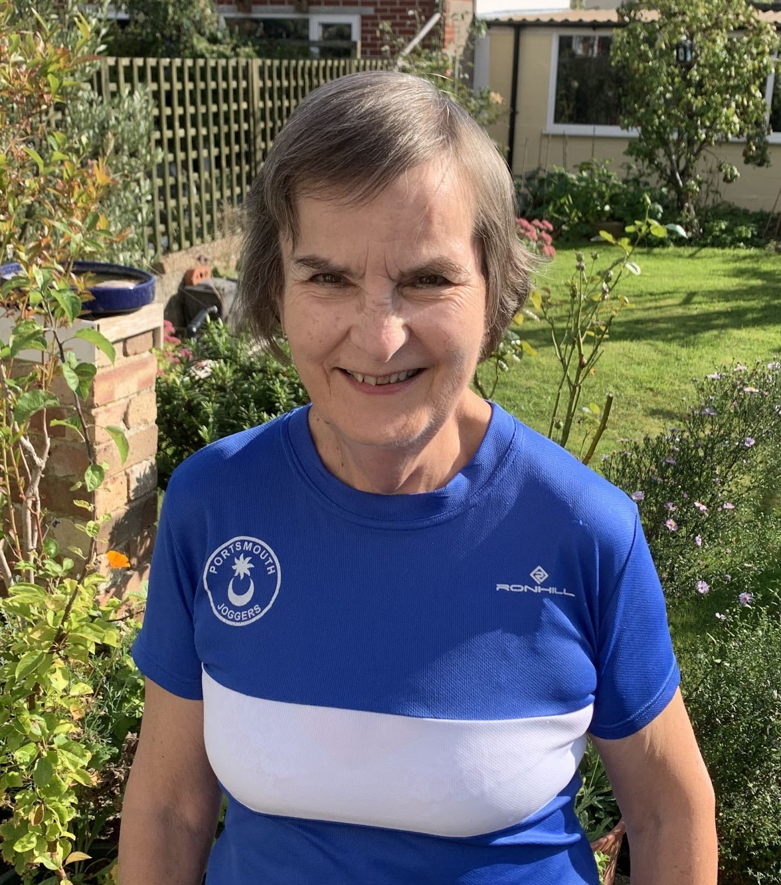
Celia Oxley - Newsletter Editor
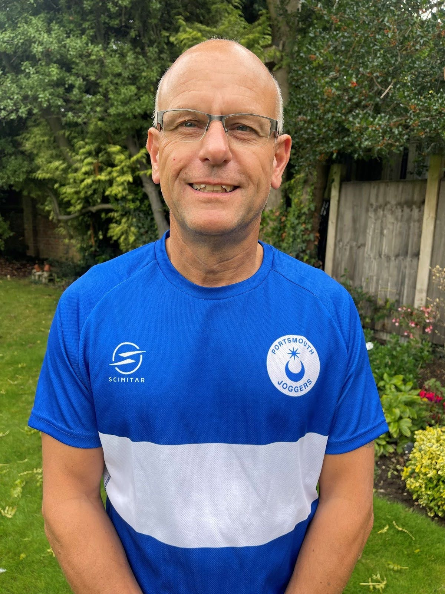
Chris Ellis - Kit Manager
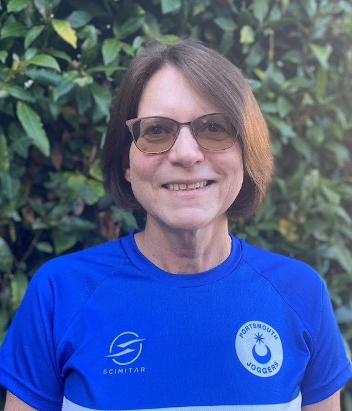
Sarah Stone - EDI Officer
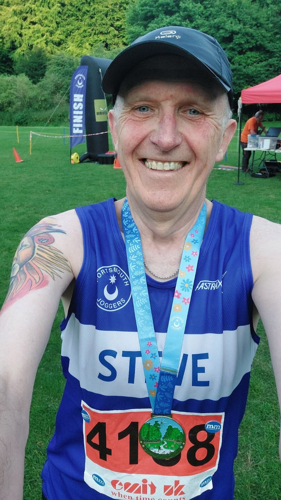
Steve Hyson - Health and Safety Officer
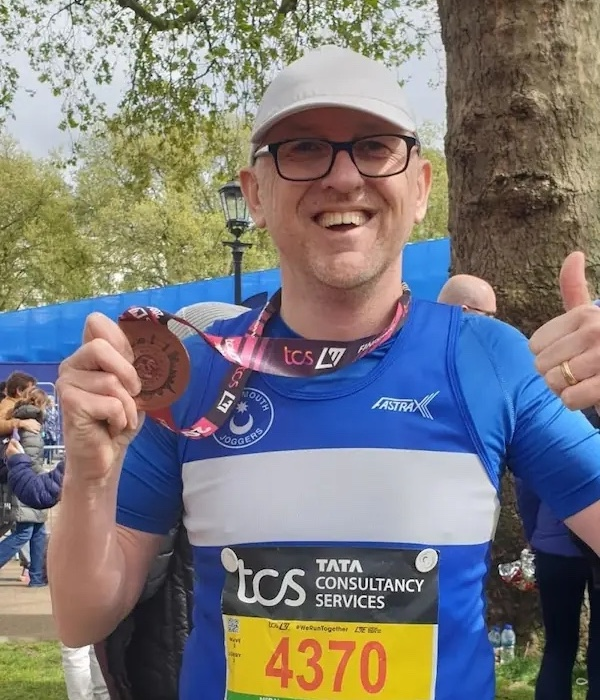
Pete Birch
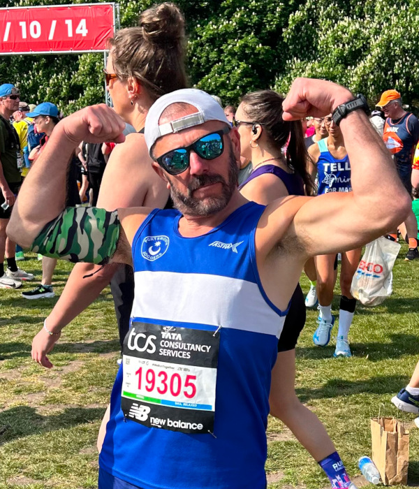
Tim LeComte
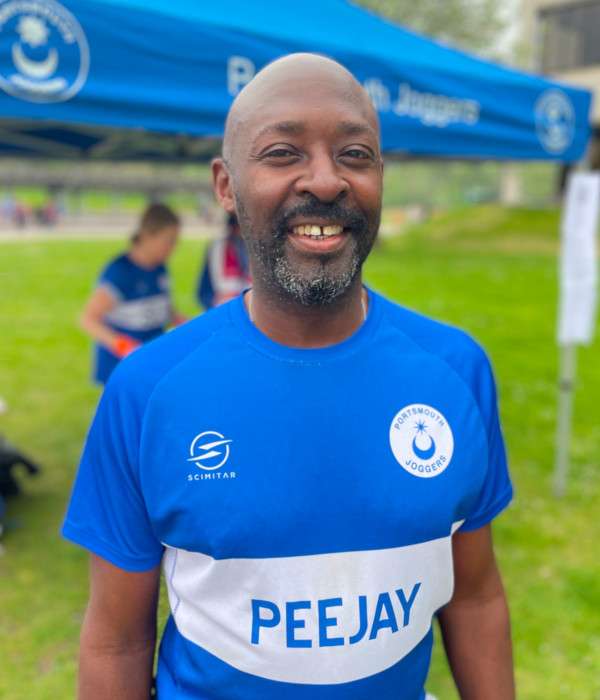
Paul James
Other Lead Roles Outside the Committee
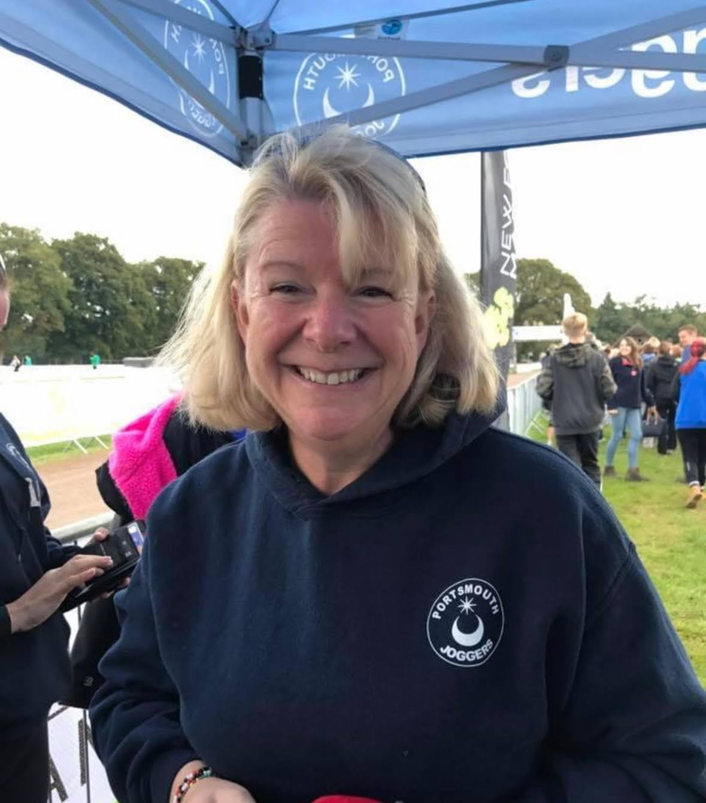
Davina Glading - Membership Secretary
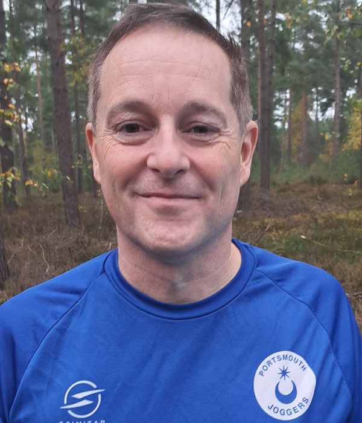
Simon Evans - Welfare Officer